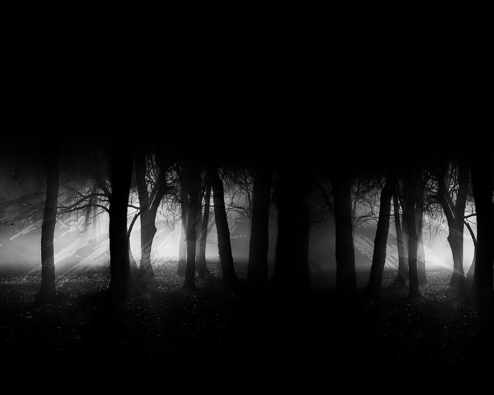

Waking Up

It's cold... The air is still... You slowly open your eyes. It's dark. Did you even open them?
You stand up and gather your senses. Your eyes slowly adjust to the abyss. You can just barely make out your hands as you bring them close to your face.
At first lost for words, you begin to call out.
Hello? Is anyone there? Where am I? What is this place?
Silence. Nothing. Not even an echo.
What Shall You Do?